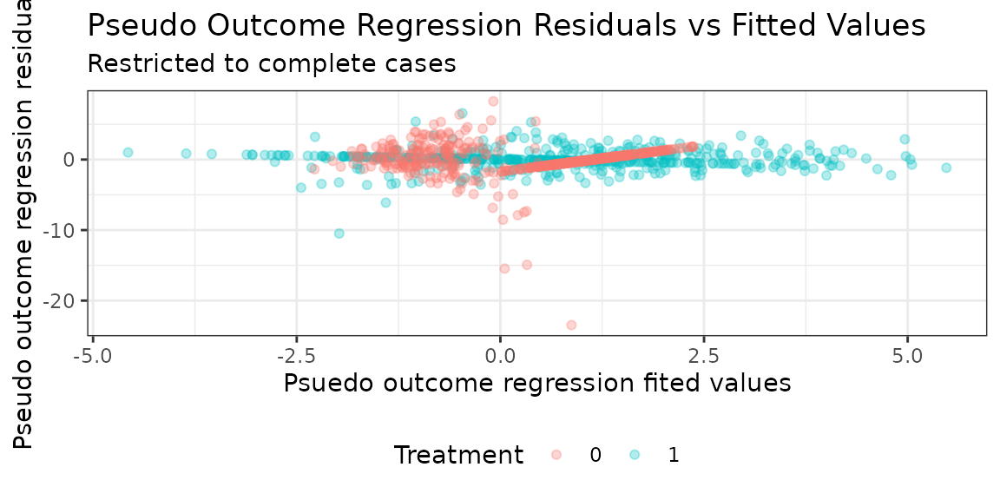

`drcmd`: Doubly-Robust Causal Inference with Missing Data
Keith Barnatchez
Johns Hopkins University
Department of Biostatistics
kbarnat1@jh.edu
Griffin DesRoches
University of Massachusetts, Amherst
Source: Johns Hopkins University
Department of Biostatistics
kbarnat1@jh.edu
Griffin DesRoches
University of Massachusetts, Amherst
vignettes/drcmd-vignette.Rmd
drcmd-vignette.RmdNote: Package is still in development. Exercise caution while using this package until it’s been fully developed, and please check back frequently for updates.
Introduction
The drcmd R package performs
semi-parametric efficient estimation of causal effects of point
exposures in settings where the data available to the researcher is
subject to missingness. By implementing methods from semi-parametric
theory and missing data (see, e.g. Robins et al.
(1994) and Kennedy (2024)),
drcmd accommodates general patterns of missing data, while
enabling users to estimate nuisance functions with flexible machine
learning methods. drcmd automatically determines the
missingness patterns present in user-supplied data, and provides
information on assumptions that must hold regarding the missingness
mechanisms in order for point estimates and inferences to be valid. By
accommodating general patterns of missingness,
drcmd serves as a centralized library for researchers
aiming to perform causal inference with missing data.
The use of doubly-robust methods for performing causal inference of
point exposures on outcomes of interest has surged over the past decade,
and numerous software packages have been developed for implementing
these estimators. While these packages are well-suited for use on
complete, missingness-free data, leading statistical software packages
provide little to no support for missing data. The lack of a centralized
package for performing doubly-robust causal inference has functioned as
a severe impediment for researchers, as missing data is ubiquitous in
real-world data, and the specific patterns of missingness can greatly
vary across applications. drcmd addresses this shortcoming
by providing a single R package for performing doubly-robust causal
inference in the presence of general missing data patterns.
Getting started
Installation
drcmd is hosted on GitHub. The latest version be
installed through the devtools package:
devtools::install_github('keithbarnatchez/drcmd')Illustrative example
To illustrate the use of the drcmd package, we will
consider a missing data problem where the outcome of interest
is missing at random conditional on measured covariates. We will assume
a cheap, noisy proxy measurement for
,
denoted
,
is available for all subjects but not predictive of missingness (so that
it is not necessary to satisfy the MAR assumption), resulting in the
following simple data generating process:
is only available when the complete case indicator , and the missing at random assumption implies . We simulate data from this model below:
n <- 1e3
X <- rnorm(n) ; A <- rbinom(n,1,plogis(X)) ; Y <- rnorm(n) + A + X + A*X
Ystar <- Y + rnorm(n)/2 ; R <- rbinom(n,1,plogis(X)) ; X <- as.data.frame(X)
Y[R==0] <- NA # Make Y NA if R==0
df <- data.frame(Y=Y,A=A,X=X,Ystar=Ystar,R=R)
head(df)## Y A X Ystar R
## 1 NA 0 -1.400043517 -1.7855709 0
## 2 NA 0 0.255317055 -0.3332133 0
## 3 NA 0 -2.437263611 -4.6215099 0
## 4 -1.539838 0 -0.005571287 -2.6864287 1
## 5 NA 0 0.621552721 0.4344233 0
## 6 NA 1 1.148411606 4.5822774 0The main function from the drcmd package is
drcmd(). The core arguments are Y,
A and X, representing the outcome, binary
treatment and covariates. Users can optionally specify proxy variables
W that are (i) predictive of the missing variables, (ii)
possibly influence the missingness mechanism, and (iii) wouldn’t be
involved in the causal analysis under the presence of complete data.
Such variables commonly arise in semi-supervised inference, where cheap
proxies are often available for expensive-to-measure variables. In our
running example, we have that
.
In practice,
can be multi-dimensional when multiple proxies are available.
W defaults to NA when not specified by the
user, consistent with settings where proxies are not available.
Missing data are allowed in the outcome, treatment, and covariates
(including any subset of covariates), as well as any combination of the
three. The only requirement for running drcmd is that there
exists at least one variable that is never missing, either in
Y, A, X, W.
drcmd detects missingness patterns in the data and
automatically creates a variable R, where R=1
if the observation is a complete-case and R=0 if the
observation is missing. Note that this does not
guarantee identifiability of the causal estimands
or
.
The validity of the resulting estimates hinges on the MAR assumption
holding, a crucial problem-specific determination.
Along with specifying variables, users must specify means by which to
estimate all nuisance functions. All nuisance functions are estimated
through a Super Learner (a stacking algorithm) using the
SuperLearner package. There are 4 nuisance functions that
are fit by drcmd, for
:
where
is the pseudo-outcome formed by the efficient influence
function for estimating the counterfactual mean functional
,
and
collects all variables that are never subject to missingness (and are
always available, regardless of whether
or
).
drcmd automatically determines the variables comprising
.
Users can specify learners for each nuisance function through the
nuisance-specific arguments below, or set a common library for all of
them through default_learners. A nuisance-specific argument
overrides default_learners for that function.
| Argument | Nuisance function | Role |
|---|---|---|
m_learners |
Outcome regression | |
g_learners |
Treatment propensity score | |
r_learners |
Complete-case (missingness) propensity score | |
po_learners |
Pseudo-outcome regression | |
default_learners |
— | Library applied to any nuisance not given its own argument |
Each argument takes a vector of SuperLearner library
names, using the same syntax one passes directly into
SuperLearner. To see the base libraries available, users
can run get_sl_libraries():
drcmd::get_sl_libraries()## [1] "SL.bartMachine" "SL.bayesglm" "SL.biglasso"
## [4] "SL.caret" "SL.caret.rpart" "SL.cforest"
## [7] "SL.earth" "SL.gam" "SL.gbm"
## [10] "SL.glm" "SL.glm.interaction" "SL.glmnet"
## [13] "SL.ipredbagg" "SL.kernelKnn" "SL.knn"
## [16] "SL.ksvm" "SL.lda" "SL.leekasso"
## [19] "SL.lm" "SL.loess" "SL.logreg"
## [22] "SL.mean" "SL.nnet" "SL.nnls"
## [25] "SL.polymars" "SL.qda" "SL.randomForest"
## [28] "SL.ranger" "SL.ridge" "SL.rpart"
## [31] "SL.rpartPrune" "SL.speedglm" "SL.speedlm"
## [34] "SL.step" "SL.step.forward" "SL.step.interaction"
## [37] "SL.stepAIC" "SL.svm" "SL.template"
## [40] "SL.xgboost" "SL.hal9001"This list includes SL.hal9001, a wrapper for the
highly-adaptive LASSO (HAL). Users can additionally create custom
libraries, and are encouraged to consult the SuperLearner
package documentation for further details.
Cautionary note: weighted regressions
The nuisance functions and are estimated with regressions that add weights to the underlying loss functions. In turn, libraries that do not support (or ignore) weights will tend to yield biased estimates. Users are encouraged to ensure all libraries used support weights.
Using drcmd
Calling the drcmd function
Below we demonstrate an example call of drcmd(), which
requires users to provide an outcome Y, binary treatment
A, covariate dataframe X, and SuperLearner
libraries. We make use of the default_learners argument to
specify SuperLearner libraries for all nuisance functions, estimating
each through an ensemble of generalized linear models (GLMs) and
generalized additive models (GAMs).
To make use of the additional proxy variable, we can simply specify
the W argument in the call to drcmd(). In
general, W can be multidimensional. In our running example,
we have that
.
res <- drcmd::drcmd(Y=Y, A=A, X=X, W=data.frame(Ystar),
default_learners=c('SL.gam'))Users can specify specific learners through nuisance-specific
arguments, which will overwrite the learners specified in
default_learners for that particular nuisance function if
default_learners is specified. For example, to estimate the
pseudo-outcome regression through GAMs, and all other nuisance functions
with a Super Learner ensemble of GLMs and splines, we can make the
following call to drcmd():
Alternatively, one can omit specification of
default_learners entirely, provided learners are specified
for each nuisance function:
Outputting results
Users can view a summary of the estimation procedure by calling the
summary() function, which provides point estimates,
standard errors and 95% CIs for main causal estimands. By default,
drcmd obtains estimates of
,
,
and the average treatment effect (ATE)
.
When the outcome is binary, drcmd additionally reports the
causal risk ratio
and odds ratio. Standard errors for these estimands are obtained via the
delta method (see the Technical Details section).
summary(res)## ======================================================================
## Summary of drcmd results
## ======================================================================
## Estimand Estimate SE 95% CI
## ----------------------------------------------------------------------
## ATE: 1.098 0.119 [0.864, 1.331]
## E[Y(1)]: 1.116 0.103 [0.915, 1.317]
## E[Y(0)]: 0.018 0.090 [-0.158, 0.194]
## ----------------------------------------------------------------------
## Variables with missingness (U): Y
## Variables without missingness (Z): X, A
## ----------------------------------------------------------------------
## Validity of results requires causal assumptions to hold,
## as well as the assumption that U is independent of R given ZExtracting output
After running drcmd(), numerous objects are stored
within the resulting output, including
-
results: A list containing (i) parameter estimates stored in a dataframe namedestimates, (ii) standard errors stored in a dataframe namedses, and (iii) nuisance function estimates stored in a dataframe namednuis -
params: A list containing all parameter values used bydrcmd() -
R: Binary complete case indicator, where 1 denotes a complete case -
U: Names of variables with partially missing values -
Z: Names of variables with no missing values
Users can obtain a detailed summary by specifying
detail=TRUE in the summary function:
summary(res,detail=TRUE)## ======================================================================
## Summary of drcmd results
## ======================================================================
## Estimand Estimate SE 95% CI
## ----------------------------------------------------------------------
## ATE: 1.098 0.119 [0.864, 1.331]
## E[Y(1)]: 1.116 0.103 [0.915, 1.317]
## E[Y(0)]: 0.018 0.090 [-0.158, 0.194]
## ----------------------------------------------------------------------
## Variables with missingness (U): Y
## Variables without missingness (Z): X, A
## ----------------------------------------------------------------------
## Validity of results requires causal assumptions to hold,
## as well as the assumption that U is independent of R given Z
## ----------------------------------------------------------------------
## Number of cross-fitting folds (k): 1
## Outcome regression nuisance learners: SL.glm SL.gam
## Propensity score nuisance learners: SL.glm SL.gam
## Missingness nuisance learners: SL.glm SL.gam
## Pseudo-outcome nuisance learners: SL.glm SL.gam
## Estimation method: augmented complete case one-stepAdditional parameters
Cross-fitting
While not enabled by default, users can estimate parameters through
cross-fitting by setting the k argument to the desired
number of folds. By default, drcmd uses a single fold.
Cross-fitting is encouraged when the user specifies nuisance learners
that cover complex function classes, such as random forests. See the
technical details section for more information on the rationale behind
and implementation of cross-fitting.
When k > 1, the folds are independent and can be fit
concurrently by setting parallel=TRUE, which distributes
them across cores via parallel::mclapply (not supported on
Windows). Separately, the cv_folds argument controls the
number of cross-validation folds SuperLearner uses
internally for model selection within each fit (default 5); lowering it
speeds up estimation at some cost to learner selection.
res <- drcmd::drcmd(Y=Y, A=A, X=X,
default_learners='SL.glm',
k=3)Empirical efficiency maximization
In practice, the pseudo-outcome regression function
will tend to be an inherently difficult nuisance function to estimate.
While drcmd estimates this regression through conventional
regression methods by default, users can optionally fit
through empirical efficiency maximization (EEM) by setting the argument
eem_ind to TRUE. Given an implicitly-defined
function class determined through choice of nuisance learner for
,
rather than attempt to minimize the MSE
,
EEM aims to minimize the variance of the estimator itself. An example
function call is provided below:
res <- drcmd::drcmd(Y=Y, A=A, X=X,
default_learners='SL.glm',
k=1,
eem_ind=TRUE)Further details on the EEM procedure are provided in the Technical Details section.
Targeted maximum likelihood estimation
By default, drcmd constructs debiased machine learning
estimators (often called one-step debiased estimators) of counterfactual
means and treatment effects. A alternative, asymptotically equivalent
framework based on targeted maximum likelihood (TML) to construct the
final estimators can be used by setting the tml argument to
TRUE:
res <- drcmd::drcmd(Y=Y, A=A, X=X,
default_learners='SL.glm',
k=1,
tml=TRUE)When tml=FALSE (the default), drcmd
constructs the final estimator through a one-step debiased estimator.
The two frameworks (one-step and TML) rely on the same four nuisance
function estimates, and only differ in how they leverage those estimates
to construct the final estimator. Further details are provided in the
Technical Details section.
User-provided complete-case probabilities
In most settings, the probability of an individual observation being
a complete case will be unknown and estimated by drcmd.
However, in some study designs (e.g. two-phase sampling designs),
complete cases probabilities are known by design and controlled
by the researcher. In these settings, users can provide complete-case
probabilities through the argument Rprobs:
n <- 1e3
X <- rnorm(n) ; A <- rbinom(n,1,plogis(X)) ; Y <- rnorm(n) + A + X
Ystar <- Y + rnorm(n)/2 ; R <- rbinom(n,1,plogis(X)) ; X <- as.data.frame(X)
Y[R==0] <- NA # Make Y NA if R==0
res <- drcmd::drcmd(Y=Y, A=A, X=X,
default_learners='SL.glm',
Rprobs=plogis(X))When provided, drcmd will use the user-supplied
Rprobs in place of estimating
.
Trimming of propensity scores
Extreme estimated propensity scores, used to form inverse probability
weights that account for the treatment mechanism and missing data
mechanism, can lead to unstable estimators. To mitigate instability,
drcmd truncates propensity scores at the values 0.025 and
0.975 by default. Users can adjust these values through the
cutoff argument, which will truncate propensity scores at
the values cutoff and 1-cutoff. For instance,
to avoid truncating weights one can set cutoff=0:
res <- drcmd::drcmd(Y=Y, A=A, X=X,
default_learners='SL.glm',
cutoff=0)ATT / ATC estimation
While not estimated by default, drcmd can additionally
estimate the ATT and/or ATC through the logicals att and
atc. Note that ATT/ATC estimation is currently supported
only with one-step estimation, so it cannot be combined with
tml=TRUE.
## ======================================================================
## Summary of drcmd results
## ======================================================================
## Estimand Estimate SE 95% CI
## ----------------------------------------------------------------------
## ATE: 1.063 0.112 [0.845, 1.282]
## E[Y(1)]: 1.091 0.100 [0.895, 1.286]
## E[Y(0)]: 0.027 0.086 [-0.142, 0.196]
## ATT: 1.385 0.141 [1.108, 1.661]
## ----------------------------------------------------------------------
## Variables with missingness (U): Y
## Variables without missingness (Z): X, A
## ----------------------------------------------------------------------
## Validity of results requires causal assumptions to hold,
## as well as the assumption that U is independent of R given Z## ======================================================================
## Summary of drcmd results
## ======================================================================
## Estimand Estimate SE 95% CI
## ----------------------------------------------------------------------
## ATE: 1.063 0.112 [0.845, 1.282]
## E[Y(1)]: 1.091 0.100 [0.895, 1.286]
## E[Y(0)]: 0.027 0.086 [-0.142, 0.196]
## ATC: 0.766 0.122 [0.527, 1.004]
## ----------------------------------------------------------------------
## Variables with missingness (U): Y
## Variables without missingness (Z): X, A
## ----------------------------------------------------------------------
## Validity of results requires causal assumptions to hold,
## as well as the assumption that U is independent of R given ZDiagnostic plots
While users can extract output from the results structure to
construct plots manually, drcmd comes with numerous
built-in plotting functions to help users diagnose potential issues in
the fitting procedure. Users can specify their desired plot with the
type argument: (i) PO: residuals of
pseudo-outcome regression vs predicted values, (ii) IC:
density plots of the influence curves for
,
and the ATE, (iii) g_hat: Density plots of fitted treatment
propensity scores among complete cases, (iv) r_hat: Density
plots of fitted complete case propensity scores among complete
cases.
plot(res,type='PO')
Alternatively, users can cycle through all diagnostic plots by
leaving the type argument unspecified or setting it to
'All'
plot(res)Technical Details
Observed and full data influence functions
drcmd leverages developments from semiparametric theory
for the estimation of functionals in the presence of missing data. Key
to semiparametric efficient estimation with missing data is the
conceptualization of (i) the full-data distribution one would
have access to in the presence of missing data, and (ii) the
observed data distribution one actually has access to. In full
generality, suppose there exists a missingness free distribution one
would ideally sample observations
from the full-data distribution
:
where interest lies in some pathwise
differentiable statistical functional
and
can be decomposed into
.
Rather than observe data from , we instead observe data from the observed-data distribution containing i.i.d. observations Above, is only observed when , and is observed for all and contains variables that are (i) possibly predictive of missingness, and (ii) but not a component of , in the sense that they wouldn’t be used for estimating the target estimand when one has access to complete data. is closely connected to the notions of proxy and surrogate variables.
Letting denote the efficient influence curve for , the efficient influence curve for induced by the observed data distribution can be written where and . The above representation holds so long as the missing at random assumption holds, where collects all variables which are always observed.
Estimation of counterfactual means
Throughout, we will consider the scenario of estimating a generic counterfactual mean . Under the core causal inference assumptions of consistency, positivity, and exchangeability, the counterfactual mean can be expressed as where and is identified under the complete-data distribution.
To build intuition, return to the earlier outcome proxy example where we observe and assume In this setting, the ideal distribution is given by , and notice , and . It’s well-known that the efficient influence curve for under the full-data distribution is given by In turn, the observed data EIC, a crucial ingredient for constructing efficient semiparametric estimators, is given by
We now consider numerous means by which can be estimated.
Plug-in estimator
Recalling , one can construct a plug-in estimator of of the form
above, can be estimated through a regression of on and which weights the underlying loss function by , where are estimated complete case probabilities. In the event that covariates are partially missing, one can instead implement the plug-in estimator
While the above estimator is straightforward to implement, its asymptotic distribution is intractable when the above nuisance functions are estimated with machine learning methods. Specifically, it can be shown that under modest regularity conditions,
where
is the efficient influence curve for
under the observed data distribution. The term
above is crucial, as it is typically of a slower order than
,
invalidating standard asymptotic inference and making the construction
of confidence intervals an intractable task. In turn,
is typically referred to as a plug-in bias term.
drcmd allows for estimators based on two general frameworks
that aim to remove this plug-in bias: one-step estimation and targeted
maximum likelihood estimation.
One-step estimation
The default estimation method used by drcmd is based on
the method of one-step bias correction. The one-step estimator simply
removes the above plug-in bias by adding its estimate back on to the
plug-in:
implying the form
Empirical efficiency maximization (EEM)
The nuisance function , often referred to as the pseudo-outcome regression function, is an inherently complicated nuisance function:
where collects all non-missing variables. Particularly when the relative share of complete cases is small, estimation of can be a difficult task. The empirical efficiency maximization framework is motivated by the finding that (under standard regularity conditions),
meaning that if the complete case probabilities are estimated consistently, mis-specification of will not influence bias of the estimator, but will hamper efficiency.
Targeted maximum likelihood estimation
Recalling the form of the observed data influence curve,
the targeted maximum likelihood approach aims to remove the above plug-in bias by updating the initial estimates and in a manner where
- The updated estimate is set so that
- Using the updated , the updated plug-in estimate is set so that
The final is used to construct the final plug-in estimator
and in the case where the covariates are partially missing, the final plug-in estimator is given by
Critically, () and () above imply that the plug-in bias of is zero, allowing for the same asymptotic analysis enjoyed by . TML additionally guarantees its resulting parameter estimates will respect the bounds of the parameter space.
Standard error estimation
For all estimands in drcmd, standard error estimation is
based on asymptotic variance formulae.
Counterfactual means: Let be an estimator of , based on the observed data influence curve , where collects all nuisance functions and . It can be shown under modest regularity conditions on the estimation rates of all nuisance functions that In turn, the asymptotic variance of is given by . Standard error estimates are obtained by plugging in the empirical influence curve for :
Risk ratio: Let
and
be asymptotically linear estimators of
and
,
respectively, and let
be the asymptotic covariance of
and
.
A straightforward application of the multivariate delta method implies
the asymptotic variance of the risk ratio estimator
is given by
where
is the gradient of
.
Evaluating the above expression yields
drcmd estimates the above
asymptotic variance by substituting plug-in estimates for each
component.
Odds ratio: Continue to let and be asymptotically linear estimators of and , respectively. One can (i) find the asymptotic variance of the log odds ratio estimator , and (ii) apply the delta method an additional time to obtain the asymptotic variance of the odds ratio estimator :